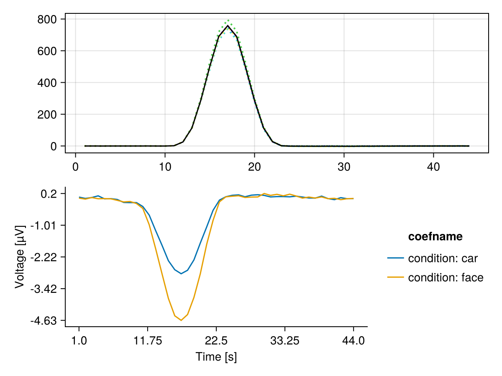

Cross-validated MANOVA (cvMANOVA)
This tutorial demonstrates how to perform cross-validated MANOVA on a two-level factor.
Setup
using Unfold
using UnfoldSim
using UnfoldStats
using StatsModels
using Random
using Statistics
using CairoMakie
using UnfoldMakie
using DataFramesSet seed for reproducible cross-validation folds.
Random.seed!(42)Generate two-class EEG data
Generate simulated multichannel EEG data with two conditions (classes).
eeg, evts =
UnfoldSim.predef_eeg(; return_epoched = true, multichannel = true, noiselevel = 1.0)
fake_times = 1:size(eeg, 2)Please cite: HArtMuT: Harmening Nils, Klug Marius, Gramann Klaus and Miklody Daniel - 10.1088/1741-2552/aca8ceCheck the event structure with condition variable
first(evts, 5)| Row | continuous | condition | latency |
|---|---|---|---|
| Float64 | String | Int64 | |
| 1 | 2.77778 | car | 62 |
| 2 | -5.0 | face | 132 |
| 3 | -1.66667 | car | 196 |
| 4 | -5.0 | car | 249 |
| 5 | 5.0 | car | 303 |
Fit an Unfold-Model
For cvMANOVA we need a overspecified designmatrix. Thus instead of using an intercept, we have one column for each level of any categorical predictor we want to use.
f = @formula 0 ~ 0 + condition
contrasts = Dict(:condition => StatsModels.FullDummyCoding())
m = fit(UnfoldModel, f, evts, eeg, fake_times; contrasts = contrasts, fit = false)As you can see, we have a binary designmatrix now. This is later important to define the contrasts.
modelmatrix(m)[1][1:5, :]5×2 Matrix{Float64}:
1.0 0.0
0.0 1.0
1.0 0.0
1.0 0.0
1.0 0.0Fit with k-fold cross-validation
We use the cross-validation solver, and importantly, we directly fit the test-set Β estimates as well
cv_solver = Unfold.solver_cv(n_folds = 5, shuffle = true, fit_test = true)
fit!(m, eeg; solver = cv_solver) # note: we could have run the fit(...;solver=...) directlyRun cvMANOVA
Define a two-level contrast to compare the two classes: [-1, 1] This means: (class 2) - (class 1)
C = [-1, 1]2-element Vector{Int64}:
-1
1We use only the "baseline" period (first 10 time samples) to estimate a noise covariance.
Y_baseline = eeg[:, 1:10, :]Compute cvMANOVA's D for each timepoint
D_per_fold = cvMANOVA(m, Y_baseline; C = C)5-element Vector{Vector{Float64}}:
[0.027764980774131687, -0.2546290504159589, -0.24916255993144862, 0.19109306235976473, 0.08125641863393376, 0.047149431331211404, -0.07127463856809141, -0.0424445617953821, 0.036007711927381836, -0.14097786992346634 … -0.3045294245836672, 0.0010104390135587732, -0.06389238983220265, 0.20715023826012918, -0.16748790182220147, 0.041758021115041365, 0.02133607821357223, 0.008909666709274745, -0.11532777191507937, 0.05890502175583695]
[-0.15980178425853017, 0.0567619471091535, -0.13829405093931982, -0.08833080637488536, -0.3772458352800997, -0.10523779272367637, 0.3751074078513164, 0.36816568014750845, -0.3422369087877687, -0.08246093227027577 … -0.49210556489171203, -0.4466499863420076, -0.6995368476691959, 0.048525762107107066, -0.19821026719850826, 0.04319158674313825, -0.10107023935738152, 0.08274159863244354, 0.22537898104739343, -0.22603420516239028]
[0.22540145150017704, 0.19552162538612966, -0.33067070328062426, -0.11426298416186839, -0.22144710964976785, -0.200703440529621, 0.07636985531337431, 0.15435807266655927, -0.06007567495241057, -0.1716224756186039 … -1.6450892306119074, -0.7426585544833768, -0.6752736647900289, -0.4326952390982113, -0.2826195531644225, -0.17356810994284125, 0.11417251568977872, 0.1262187754813273, 0.09496638119599776, 0.05913056434454566]
[0.1926049836375232, 0.022495399970289317, -0.1186917295229486, 0.013546452580904386, 0.060913869518597286, 0.19640103528957148, -0.16732198777517585, 0.13487161034038553, -0.13221882228900858, -0.3298635120578531 … 0.00996087261523129, -0.08363913685303505, -0.03968250035538556, -0.3701357264346371, 0.022715106203780606, -0.2984585994136954, 0.031856292141955636, -0.4007169165079941, 0.35607551804292314, -0.4516968241504468]
[-0.22472525328764564, -0.09821601861110911, -0.20736883169193687, 0.14774335825157445, -0.15315134855775078, 0.2743354028522875, -0.2856923668712996, -0.1736102452056607, -0.12945606450584815, -0.06319524951776864 … -1.4564279213231213, -0.5549322936228176, -0.9736331073427926, -0.49393253744025883, -0.0745937089558469, -0.26568060849691766, 0.2317535457478839, -0.16344529718626588, 0.1933543144862743, 0.018084313523514618]Aggregate the discriminability statistic across all CV folds.
D_mean = mean(D_per_fold)This is the time-resolved discriminability: higher values = better discrimination
f, ax, h = series(reduce(hcat, D_per_fold)', linestyle = :dot)
lines!(ax, D_mean, color = :black)
plot_erp!(f[2, 1], subset(coeftable(m), :channel => (x -> x .== 1)))
f
This page was generated using Literate.jl.